~~~
2019.10.17
PsySH
Tinker
globalny plik konfiguracyjny
wtf / wtf -a
Szersze błędy / WTF
wtf / wtf -a
Inne projekty używające PsySH
- CakePHP
- CodeIgniter
- Drupal
- Magento
- MediaWiki
- Phalcon
- Symfony
- WordPress
- Yii 2
- Zend Framework
eval(\Psy\sh());
magiczne zmienne
- $_ - last result
- $_e - last exception
- $_out - last stdout output
historia
- hist - wyświetlanie
- hist --show 3 - wyświetlanie wpisu
- hist --show 1..3 - wyświetlanie kilku wpisów
- hist --head 3 - wyświetlaniekilku wpisów
- hist --tail 3 - wyświetlanie kilku wpisów
- hist --grep wtf - wyszukiwanie z regex (-i case-insensitive -v inverse)
- hist --head 3 --replay - odtwarzanie historii
- hist --head 3 --save history.txt - zapisywanie historii do pliku
- hist --clear - czyszczenie historii
integracja z shellem
- odpalanie komend basha z `...` rozwija zmienne $php
dokumentacja php
- doc substr
- doc Psy/Shell
inne komendy
- ls / dump / show
- help
- edit
- sudo!!!
- whereami
plik konfiguracyjny
więcej na wiki
https://github.com/bobthecow/psysh/wiki/
Funkcja wyższego rzędu (higher-order function)
to funkcja, która przyjmuje jako przynajmniej
jeden z parametrów inną funkcję, albo zwraca
funkcję (albo jedno i drugie)

Bonus: Dogfooding
- css variables
- variable fonts
- tinker